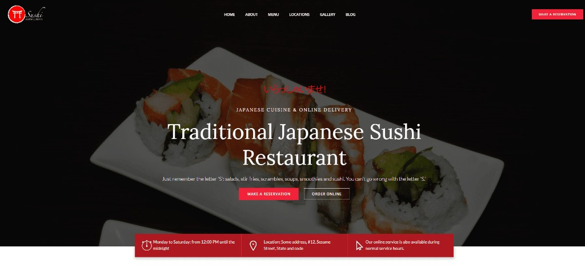
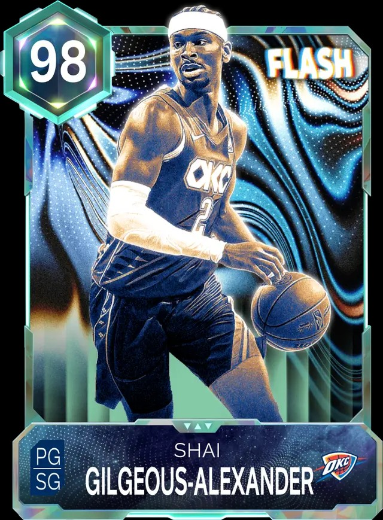
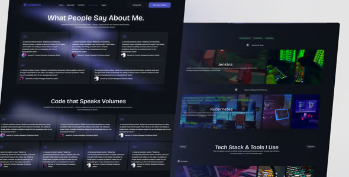
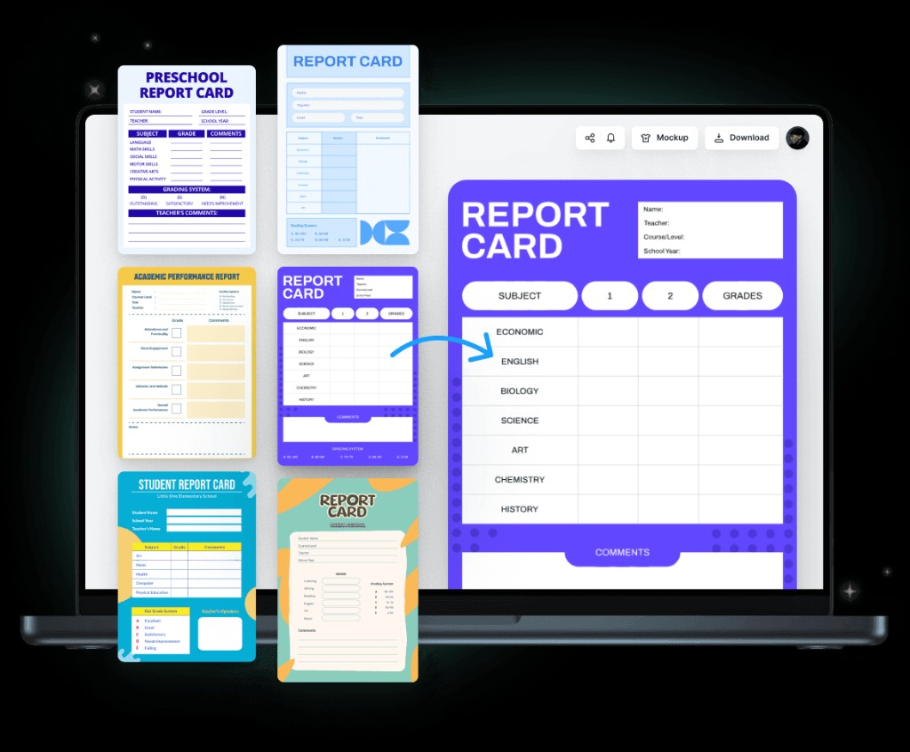

Visual identity
Joseph Ahn
Student no. 300360267
From Toronto (North York). Second gen Korean Canadian.

About me
Who I am
I work as a software engineer but I care more about the front end: spacing, colors, not making the user guess what to click. I have a personal portfolio too and even if a project is mostly backend I still try to put up a real website so there is something to show in interviews.
What I like
I like UIs with depth and motion if it is not cheesy. I watch the NBA a lot especially playoffs. I follow OKC and the Spurs, Wembanyama is fun to watch.
I also get ideas from sports broadcasts and apps where the important info is obvious.
How I usually tackle something
I try to know who is gonna use it and what they need before I start drawing screens. Still mess this up sometimes.
I put boxes on the page first (nav, main action, whatever matters most). Colors and animation come later or I get sidetracked. Assignment 2 has two storyboards linked from the home page.
Then I build the UI. Bigger apps I use React. For SEG stuff or a fast page it's mostly HTML/CSS/JS and Bootstrap like here.
If there is a backend I hook that up after, then I remember I need loading states and errors so it does not just spin forever or show a white screen.
I am now developing my design workflow through the SEG 3125 course, focusing on user design and heuristic evaluation so that I become a better developer.
SEG 3125 (this course)
UI stuff at uOttawa software eng. Link is just the catalogue page for this class.
SEG 3125 on uOttawa catalogueReference: Nielsen Norman Group
For SEG 3125 I will use this when I need words for why a UI choice makes sense (scanning, errors, feedback), after the slides.
Visit NN/gSEG 3125 · Assignment 2
Joey's — high-fidelity service site
Public prototype (no password). TA can test home, booking, and both storyboards without contacting me.
Quick test: open the site → Book → pick service, date, time → enter name + email → Confirm.
Case studies


Design 3
North American rent website: map and filters so you can compare rent between cities or regions.
View hold page
Design 4
Take a plain transcript and turn it into an interactive transcript (clickable sections, highlights, that kind of thing).
View hold page